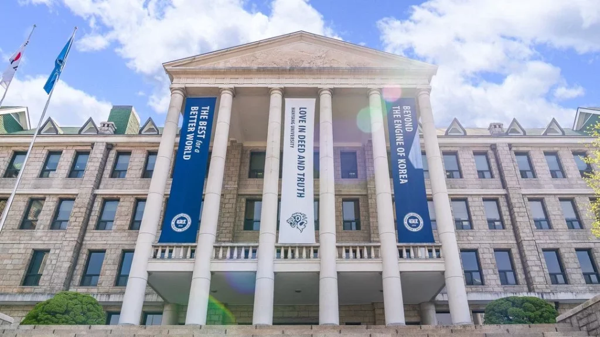
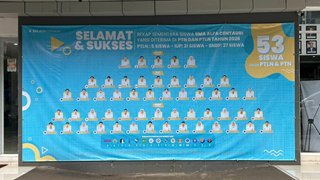

SMA Cakrawala Utama
Mengukir Masa Depan
Mengukir Masa Depan
Dewasa ini kebutuhan akan pendidikan berkualitas semakin meningkat. SCU dengan berbagai program unggulannya berusaha menjawab tantangan tersebut. Didirikan pada 2015. SCU semakin dipercaya masyarakat karena telah berhasil meloloskan siswa/inya ke berbagai perguruan tinggi favorit dalam dan luar negeri.

SMA Cakrawala Utama kembali mencatatkan prestasi membanggakan dalam penerimaan perguruan tinggi tahun 2026. Hingga rekapitulasi sementara, sebanyak 195 siswa telah diterima di berbagai perguruan tinggi negeri, perguruan tinggi luar negeri, serta jalur inter...
Baca Selengkapnya →
Kegiatan ini menjadi bagian dari upaya sekolah dalam mengembangkan kreativitas, karakter, serta kemampuan kolaborasi siswa di luar pembelajaran di ruang kelas.

SMA Alfa Centauri merilis rekapitulasi sementara penerimaan siswa di Perguruan Tinggi Negeri (PTN) dan Perguruan Tinggi Luar Negeri (PTLN) tahun 2026. Hingga data...

Dalam rangka menyambut bulan suci Ramadhan, SMA Alfa Centauri menyelenggarakan Centaurian Ramadhan Fair (CRF) selama dua hari sebagai ruang pembinaan karakter dan spiritualitas siswa...